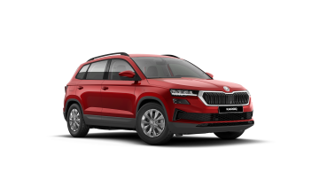

Historie modelu



Škoda Karoq je kompaktní SUV z rodiny automobilů Škoda, nástupce modelu Yeti. Škoda Karoq získal titul Auto roku 2018 v Česku. Vůz je o něco větší než Škoda Kamiq a zároveň menší než Škoda Kodiaq, oproti Kamiqu je určený i mimo města a silnice.
Škoda Auto si název zaregistrovala na Úřadu průmyslového vlastnictví v květnu 2017. Ten zapadá do záměru značky vytvořit jednotnou koncepci jmen pro svá nová SUV, která budou končit písmenem Q.
Jméno Karoq pochází stejně jako jméno Kodiaq od Aleutů, původních obyvatel jihoaljašského ostrova Kodiak. Jméno KAROQ vzniklo kombinací aleutských slov KAA‘RAQ a RUQ, tedy auto a šíp, který je motivem loga automobilky.
Vůz je odvozen z koncernového dvojčete Seatu Ateca. Byl vyvíjen v mladoboleslavském vývojovém centru Škoda po dobu 4 let. Během té doby najely testovací vozy 2 miliony kilometrů.
Auto je postavené na koncernové modulární platformě MQB společné také pro vozy Superb, Octavia nebo Kodiaq. Auto dostane benzinové a turbodieslové motory a možnost pohonu všech kol 4x4
Motory
Model Karoq má oproti Kamiqu pestrý výběr motorů od malobjemových přeplňovaných benzínových motorů až po velkoobjemové turbomotory včetně naftových.
Škoda Karoq
| typ motoru |
roky výroby |
výkon |
| 1,0 TSI | 2020 - dosud | 81KW |
| 1,0 TSI | 2020 - dosud | 85KW |
| 1,4 TSI | 2017 - dosud | 110KW |
| 1,5 TSI | 2017 - dosud | 110KW |
| 2,0 TSI | 2019 - dosud | 140KW |
| 1,6 TDI | 2017 - dosud | 85KW |
| 2,0 TDI | 2020 - dosud | 85KW |
| 2,0 TDI | 2017 - dosud | 110KW |
| 2,0 TDI | 2017 - dosud | 140KW |
recenze